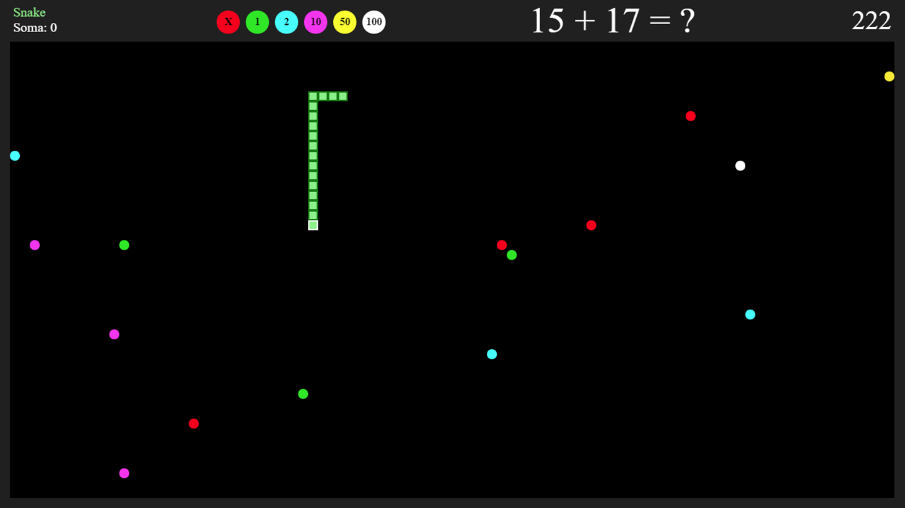
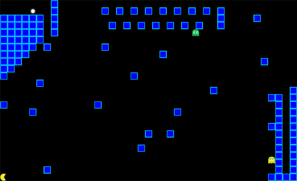

Devido ao vírus COVID-19, o projeto LUDUM PRO BONO disponibizou uma versão online dos jogos.
Ajude-nos a melhorar nossos jogos dando sua opinião através de um formulário.
Introdução
No ensino superior, disciplinas de programação apresentam grandes desafios aos alunos, principalmente na descrição de raciocínio lógico para abstração na resolução de problemas. Esta dificuldade é observada também em disciplinas que envolvem conceitos matemáticos e lógica nos ensinos fundamental e médio (SOUZA et al., 2016).
Estes conhecimentos são essenciais para diversas áreas e são aplicadas em disciplinas para resolução de problemas (SETUBAL, 2000). Trabalhos recentes têm utilizado conceitos de jogos para auxiliar alunos no aprendizado de lógica e matemática. Porém grande parte dos jogos educativos possuem temáticas infantis tendo como objetivo ensinar crianças as regras básicas da matemática, noções de geometria como encaixar peças de quebra-cabeças, aprendizado do alfabeto e formação de palavras e entre outros estilos de jogos semelhantes.
Diferentemente da maioria dos jogos educativos atuais, o projeto de extensão Ludum Pro Bono tem como objetivo reciclar componentes de máquinas caça-níquel para executar jogos educativos abordando uma temática mais madura e com foco na aprendizagem de lógica através da construção de um Arcade.
Os jogos têm como objetivo auxiliar o usuário a desenvolver capacidades mais avançadas como raciocínio lógico, memória, conhecimento nas áreas de química, geografia, matemática, entre outros.
Objetivo
O projeto de extensão Ludum Pro Bono tem como objetivo reciclar componentes de máquinas caça-níquel para utilizar jogos educativos com foco na aprendizagem de lógica através da construção de um Arcade.
Metodologia
O projeto Ludum Pro Bono propõe a reciclagem de componentes para montagem de Arcade de jogos educativos. Atualmente, os arcades montados no projeto possuem o sistema operacional Linux Debian, com processador Intel Celeron 2.2ghz e 512Mb de memória RAM configurado para iniciar o software do projeto assim que a máquina for ligada. Ao iniciar o software, é apresentado um menu de seleção dos jogos composto por imagens, GIFs animados, descrição e controles do jogo para tornar o processo mais visual intuitivo.
O menu e jogos foram desenvolvidos nas linguagens html5, css3 e javascript utilizando o framework electron.
O sistema apresenta um menu composto por cards com imagens relacionadas aos jogos desenvolvidos que ao serem selecionados, será apresentado ao usuário o jogo escolhido. Esses jogos tem como requisito implementar um esquema de pontos que será utilizado para montar e gerenciar um ranking de pontuação, que poderá ser visualizado pelos usuários.
Todos os jogos desenvolvidos do projeto Ludum Pro Bono foram inspirados em jogos clássicos já existentes, tornando-os mais lúdicos e promovendo prazer e nostalgia aos jogadores, além de desenvolver a capacidade de raciocinar e resolver problemas.
Atualmente há 5 jogos completos no projeto: Snake calculator, Flappy Becker, Estados Brasileiros, Brainmory e Pacmaze. A seguir será apresentado um resumo das mecânicas, objetivos e inspirações de cada jogo acompanhado de uma breve contextualização do porque o jogo foi desenvolvido.
Jogos
Snake Calculator
Cerca de 89% dos alunos chegam ao final do Ensino Médio sem aprender o esperado em matemática, gestores e especialistas em educação avaliam as principais razões para esse cenário como, aulas pouco dinâmicas, alunos pouco motivados e professores com formação deficiente (POR QUE 89% DOS ESTUDANTES CHEGAM AO FINAL DO ENSINO MÉDIO SEM APRENDER O ESPERADO EM MATEMÁTICA?, 2012).
Pensando nos alunos com essa dificuldade, foi desenvolvido o Snake Calculator, um jogo matemático baseado no clássico jogo Snake, de onde surgiu inspiração das mecânicas e jogabilidade, porém como diferencial, para que o jogador consiga acumular pontos e evoluir no jogo, é necessário realizar cálculos rapidamente obedecendo a um tempo determinado que aumenta gradativamente à medida que o jogador faz mais pontos.
Pacmaze
O ensino de lógica e programação apresenta uma série de desafios. Muitos destes desafios foram descritos em trabalhos publicados na academia (SOUZA et al., 2016). Trabalhos recentes (KHENISSI et al., 2013) (ZUALKERNAN, 2006) têm proposto a utilização de jogos conhecidos do grande público com viés educacional.
O Pacmaze baseado no jogo Pacman, foi criado com o propósito de incentivar o estudo de algoritmos e estimular o raciocínio lógico, onde na sua gameplay, o jogador é apresentado à um labirinto e deve conduzir o personagem até o final do caminho, tendo de se precaver com as armadilhas e inimigos que tentarão impedir que o personagem avance para o próximo nível.

Flappy Becker
Pensando em subsídios para as pessoas que desejam refinar seus conhecimentos químicos, foi criado o jogo Flappy Becker, inspirado no clássico Flappy Bird, contendo suas mecânicas e jogabilidade, porém ao invés de simplesmente desviar de obstáculos, o jogador deve escolher a molécula com o formato correto baseado em seu nome.


Estados Brasileiros
O Brasil é o 5º maior país em extensão terrestre do mundo, com cerca de 8,5 milhões de quilômetros quadrados de extensão e é composto por 26 estados mais o Distrito Federal (MORAES, 2005). Devido ao seu vasto tamanho, muitas pessoas acabam conhecendo apenas os aspectos geográficos de sua região e esquecendo das demais. Neste contexto, jogos têm sido desenvolvidos e aplicados em séries iniciais para auxiliar os professores no ensino de geografia (VERRI, ENDLICH, 2009).
O projeto Ludum Pro Bono foi responsável pelo desenvolvimento de um jogo de perguntas e respostas sobre unidades federativas do país. Espera-se que neste modelo de jogabilidade o jogador desenvolva habilidades de memória, raciocínio, reflexo e relacionamento de formato os estados com seus respectivos nomes.
Na gameplay um dos 26 estados brasileiros ficará em destaque no mapa à esquerda com a resposta em uma das quatro alternativas à direita. A barra vermelha corresponde ao tempo que o usuário tem para responder, quanto mais rápido, maior será a sua pontuação adquirida após cada acerto.


Simon
Em qualquer área do conhecimento, a memória é uma participante ativa, seja para memorizar fórmulas matemáticas, novas palavras e até mesmo uma nova forma de pensar. Afim de exercitar a memória para se tornar aliada do estudante, foi criado o jogo Brainmory.
A mecânica do jogo consiste em repetir a mesma sequência de cores que estará em destaque, sendo que em cada acerto, o jogador deverá repetir a mesma sequência, porém com uma cor a mais gerada aleatoriamente. Esse processo se repete até que o jogador cometa algum erro. A Figura abaixo apresenta a interface do jogo Simon, onde o usuário poderá se basear para memorizar as cores propostas.

Testes realizados
Os jogos foram simulados e testados com êxito através de um computador e nos próprios arcades. Após os testes, pretende-se instalar os arcades na Universidade Federal de Santa Maria de Cachoeira do Sul para que os alunos possam avaliar e colaborar com críticas sobre o projeto. Quando os alunos avaliarem positivamente o projeto, pretende-se instalar os arcades nas escolas de Cachoeira do Sul.
Conclusões
Ao longo do processo, foram encontradas algumas dificuldades. Devido aos fracos recursos de hardware das máquinas, algumas técnicas e métodos de criação de jogos que facilitam o desenvolvimento tiveram de ser deixadas de lado para que o desempenho dos jogos não fosse comprometido.
Os jogos foram testados disponibilizados no arcade de jogos Ludum Pro Bono e atualmente está em fase de avaliação pelos usuários do arcade.
Para as próximas etapas, pretende-se instalar o sistema nos outros arcades do projeto e em seguida desenvolver mais jogos educativos e aprimorar os já existentes baseado nas sugestões dos alunos da Universidade Federal de Santa Maria de Cachoeira do Sul.
Por fim, após a análise e avaliação satisfatória dos jogos feitas pelos usuários na universidade, pretende-se instalar arcades em escolas da cidade de Cachoeira do Sul – RS.
Referências
KHENISSI, Mohamed Ali; ESSALMI, Fathi; JEMNI, Mohamed. A learning version of Pacman game. In: Fourth International Conference on Information and Communication Technology and Accessibility (ICTA). IEEE, 2013. p. 1-3.
MORAES, Antonio Carlos Robert. Território e história no Brasil. Annablume, 2005.
MSOUZA, Draylson Micael; DA SILVA BATISTA, Marisa Helena; BARBOSA, Ellen Francine. Problemas e Dificuldades no Ensino e na Aprendizagem de Programação: Um Mapeamento Sistemático. Revista Brasileira de Informática na Educação, v. 24, n. 1, 2
SETUBAL, J. C. Uma proposta de Plano Pedagógico para a Matéria de Computação e Algoritmos. Anais do II Curso: Qualidade de Cursos de Graduação da Área de Computação e Informática (WEI 2000). Editora Universitária Champagnat
SOARES, Isabela DE CASTRO, Juscileide Braga Tetris a geometria em jogo In Anais do Workshop de Informática na Escola 2017 p 480
SOUZA, Draylson Micael; DA SILVA BATISTA, Marisa Helena; BARBOSA, Ellen Francine. Problemas e Dificuldades no Ensino e na Aprendizagem de Programação: Um Mapeamento Sistemático. Revista Brasileira de Informática na Educação, v. 24, n. 1, 2016.
VERRI, Juliana Bertolino; ENDLICH, Angela. A utilização de jogos aplicados no ensino de Geografia. Revista Percurso, v. 1, n. 1, p. 65-83, 2009.
ZUALKERNAN, Imran A. A framework and a methodology for developing authentic constructivist e-Learning environments. Educational Technology & Society, v. 9, n. 2, p. 198-212, 2006.
POR QUE 89% DOS ESTUDANTES CHEGAM AO FINAL DO ENSINO MÉDIO SEM APRENDER O ESPERADO EM MATEMÁTICA? [s. L.], 28 out. 2012. Disponível em: